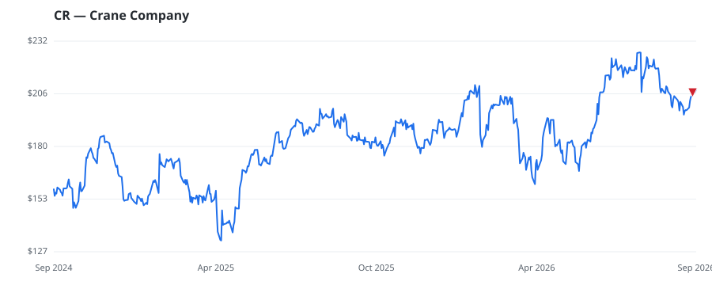

bullish · bearish · n/a — dots: price>SMA10 · SMA10>SMA50 · SMA50>SMA200 · up>down volume (20d)
Capital Goods · large cap

Crane is a diversified industrial firm that manufactures a broad range of products, including valves, pumps, aerospace components, and fiberglass-reinforced plastic panels. Its business is organized into two segments: aerospace and advanced technologies, and process flow technologies. Crane generated approximately $2.3 billion in revenue in 2025. MISCELLANEOUS FABRICATED METAL PRODUCTS · website
| Revenue | $2.3B | Net income | $366.6M |
|---|---|---|---|
| Operating income | $424.2M | Diluted EPS | $6.26 |
| Assets | $3.9B | Equity | $2.1B |
| Fund | Fund alpha vs SPY | Position | % of book |
|---|---|---|---|
| Avalon Global Asset Management LLC | +46% | $14M | 2.1% |
Hedge data: SEC EDGAR 13F · ranked funds beat SPY in >50% of their quarters · fund alpha = mirror-portfolio return minus SPY.